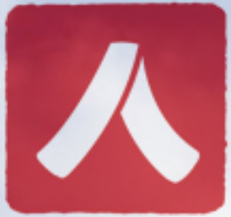
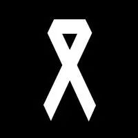
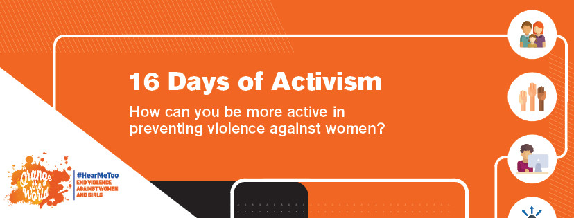
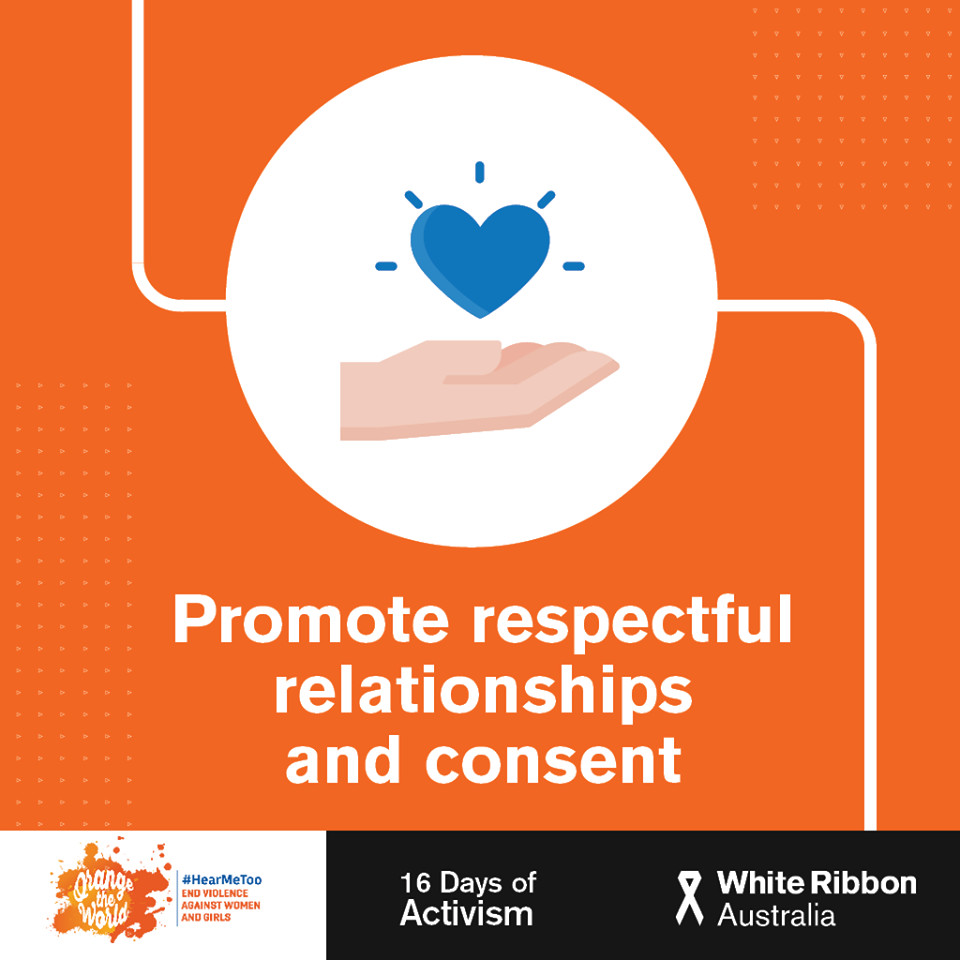
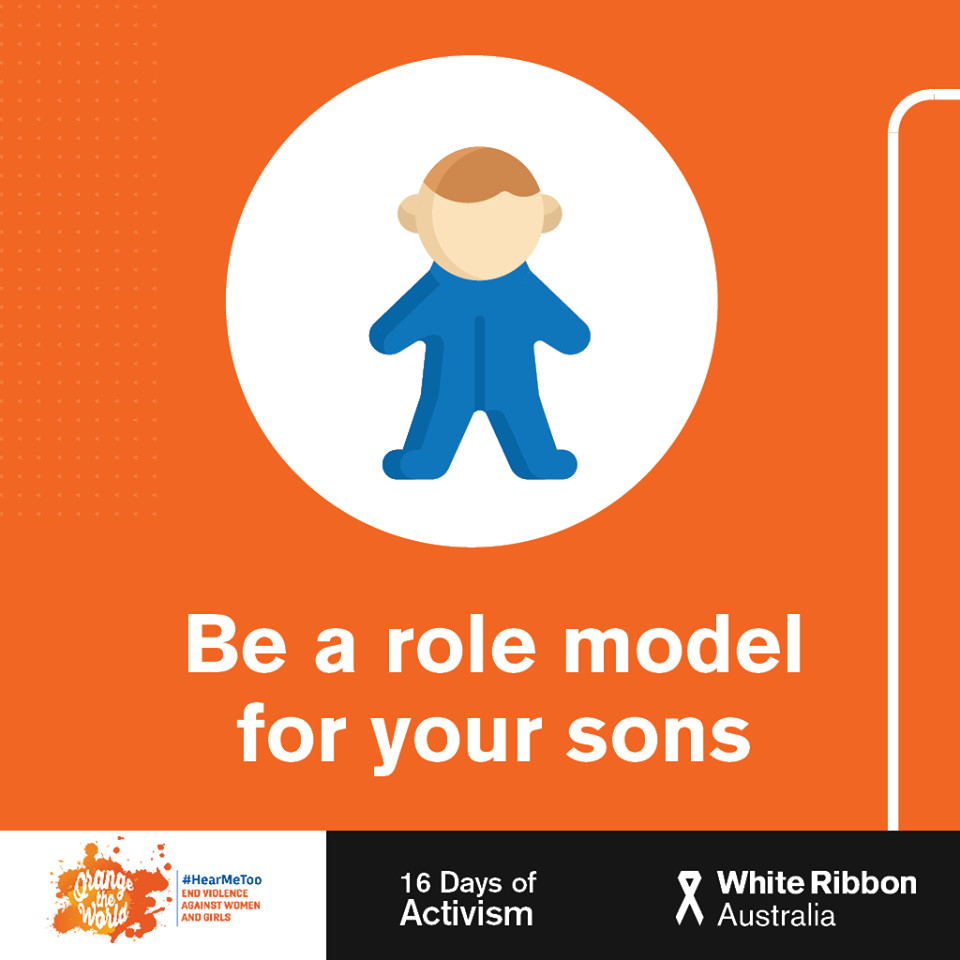
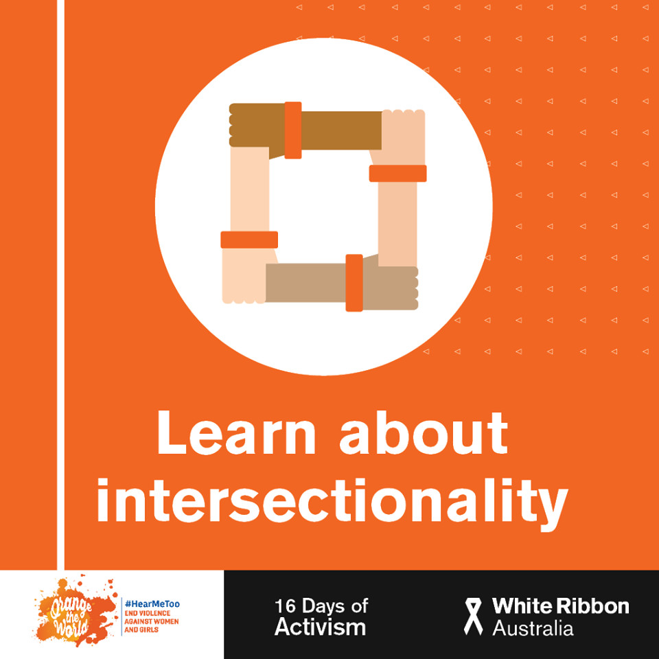
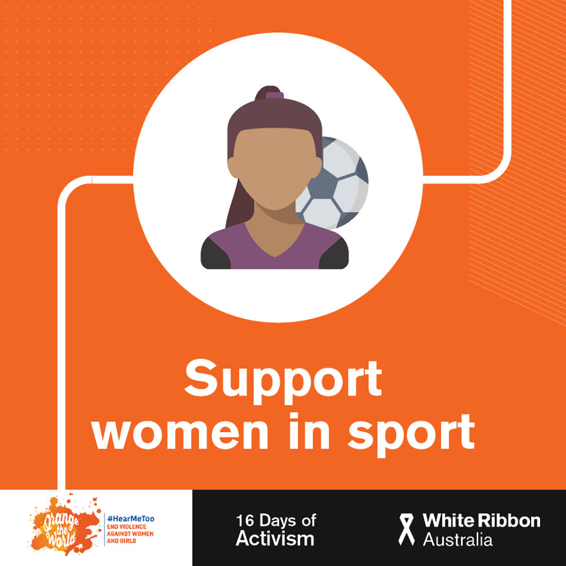
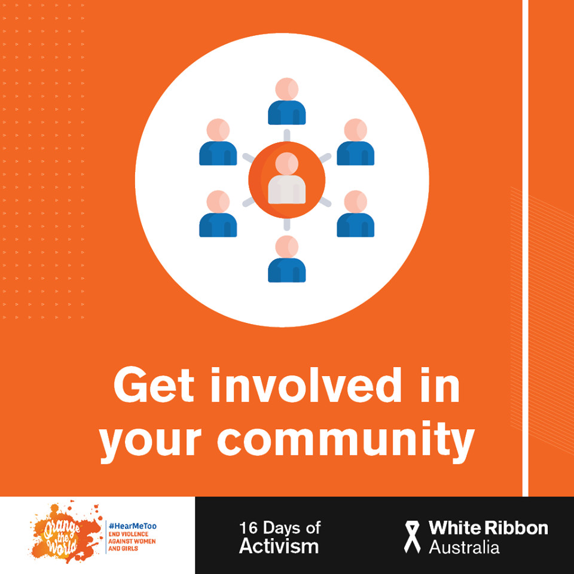
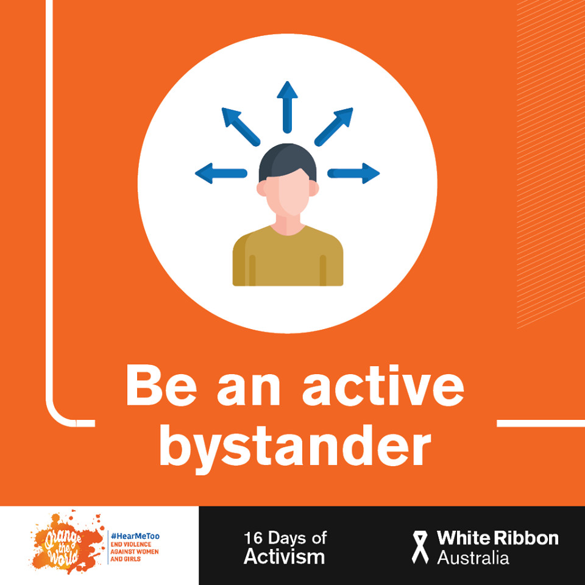

图说 | 反暴力十六日（其八）

刚刚过去 12.1 是世界艾滋病日，“红丝带”作为关注HIV和艾滋病的国际符号，相信大家并不陌生。而长得很像 DOTA 的「白丝带」是什么？它和反暴力十六日有什么渊源？白丝带运动都在做些什么？瓜瓜今天带大家来认识一下「白丝带运动」。
白丝带运动（White Ribbon Campaign, WRC）是男性同盟呼吁停止“男性对女性施暴”的全球运动。运动兴起于1991年的加拿大的魁北克省，用以反思1989年发生的蒙特利尔大屠杀——25岁的 MarcLépine 因仇视女性，枪杀了十四名女大学生。白丝带运动建立之初，旨在提高公众对“反对男性对女性暴力”的意识，并得到全球六十多个国家的积极响应，发展成为致力于消除对女性的暴力，以促进健康的亲密/家庭关系、性别平等、多元的男性气质的全球运动。

每年的11月25日到12月10日，从“国际反家庭暴力日”到“国际人权日”，是反暴力十六日行动，也是白丝带运动最活跃的时期。澳大利亚白丝带运动和酷儿论坛一样，也采用图片的形式进行倡导。


行动十六日
我们能为反对妇女暴力做些什么？
1. 在亲密关系中彼此尊重，双方同意

双方同意是所有健康关系的基础，不仅是在性爱方面（没有双方同意的性是犯罪），还可以应用于日常生活中，如吃什么、买什么、玩什么、谁来做家务、谁来清空购物车等。
2. 做孩子的榜样

无论你是哥哥爸爸叔叔爷爷，还是隔壁老王，都要做下一代孩子眼中健康两性关系的榜样。
3. 认识交叉性

交叉性指是性别、种族、性取向、能力、年龄、教育水平、宗教和经济地位在人们生活中的交叉和重叠。这些因素不是彼此分开独立存在的，而是交织在一起，共同影响人们生活。女性承受的暴力，往往也是交叉因素共同作用下的结果。
4. 支持女性在体育运动的表现

体育运动也是提高人们彼此尊重的重要渠道。
5. 融入社区生活

参与社区活动是建立健康关系，构建尊重和平等对话的积极方式。
6. 积极参与者

积极参与不是积极参与暴力，而是积极参与反暴力！不要做袖手旁观的冷血动物！如果你的身边有女性遭到暴力，站出来，说出来，伸出的手会回馈你温暖。
更多更新请关注脸书 @whiteribbonaustralia 。

中国也有白丝带运动的响应者。中国白丝带志愿者网络成立于 2013 年，为国际男性参与联盟的团体成员。中国白丝带志愿者网络致力于推动更多男性参与终止针对妇女的暴力的组织（详情可见 http://www.whiteribbon.cn）。
附：中国白丝带宣传片
https://v.youku.com/v_show/id_XNzEyNzczNjUy.html